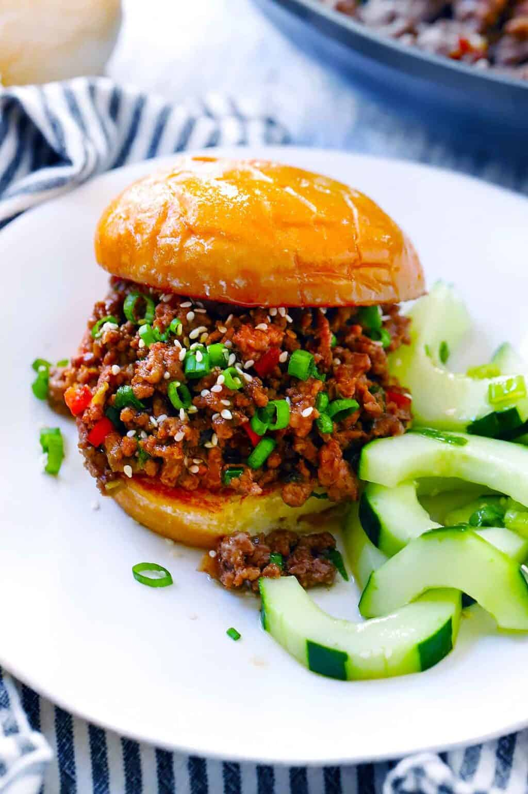

Korean BBQ Sloppy Joes

Description
These sloppy joes are almost like Korean bulgogi, served on a hamburger bun. Authentic Korean Bulgogi is made with sliced beef and a homemade marinade, but using ground beef gives a similar flavor. You may also like to add some gochujang (Korean Chili Paste) for some extra flavor and spice to the sloppy joe mix.
Ingredients
- Lean Ground Beef
- Korean BBQ sauce
- Red bell pepper
- Green onions
- Burger buns
- Canola oil
- Sesame seeds
Steps
- Sauté the bell pepper and white/light green parts of the scallions in canola oil in a large skillet.
- Add the ground beef to the skillet and brown until cooked completely, breaking it apart as much as possible with a wooden spoon.
- Add the Korean BBQ sauce to the skillet and stir together, and simmer for a few minutes until it’s reduced and thickened a little bit.
- Add the dark green onion parts to the mix.
- Scoop the filling onto burger buns, garnish with more green onions and sesame seeds if you want to, and serve.
Home